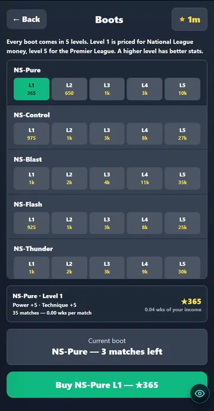
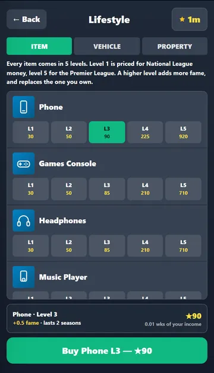
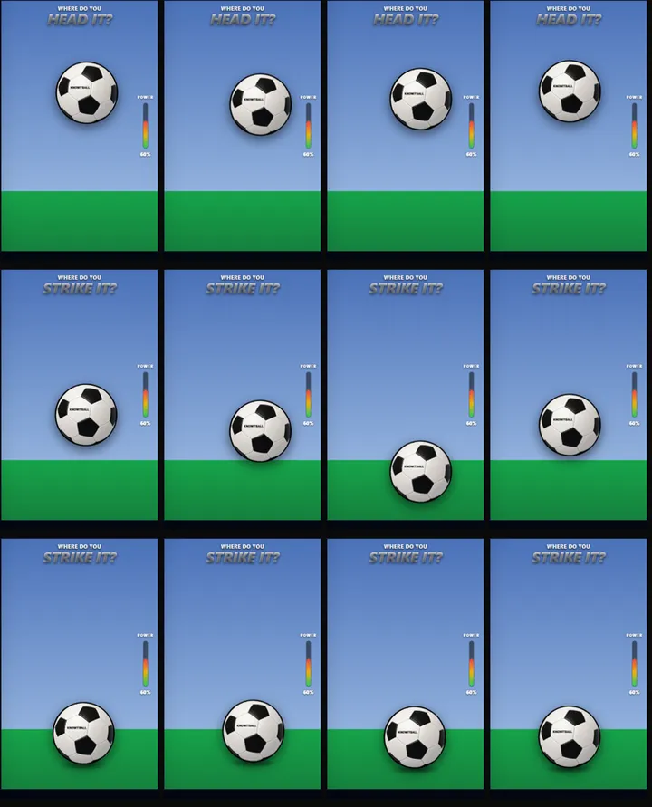

27 September 2026 · branch Mikey · 1 change · tests: all passing except the 2 that also fail on main
Problem: each item had one price. The shop had five money levels (Starter to World Class), but each item sat in just one of them, so a Phone was only ever a Starter item and a Private Jet only a World Class one.
Why: the pricing was built as five tiers with items spread across them, not five versions of each item.
Fix: every item now has 5 levels. Level 1 is priced for National League money, level 5 for the Premier League. A higher level is better: boots get about 25% more power and technique per level, lifestyle items about 40% more fame. You own one level of each item, and buying a higher one replaces it. Every level of a boot lasts as long as the original. Old saves keep what they own. seen


Problem: the "where do you strike it" ball was always sitting still on the grass, whatever the chance. Fix: a header floats slowly across the sky in an arc (and the screen says "Head it?"), a volley bounces across at half height, and a ball at your feet bobbles on the grass about a third of the time on one-on-ones, tight angles and long shots. Penalties, free kicks and corners stay still. Only where you tap counts, not when. Higher technique makes it move slower. seen

Problem: the same lines kept coming back. Why: each moment had about 8 lines, picked at random with no memory. Fix: about 300 new lines across quiet spells, misses, build-ups, strikes, results, goals and assists, and a line isn't reused while unused ones remain. measured (200 simulated matches)